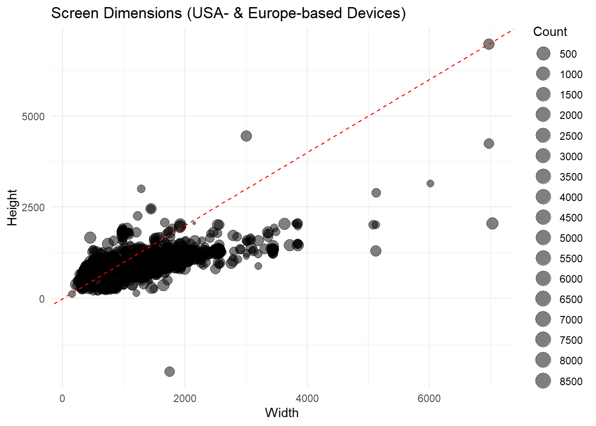
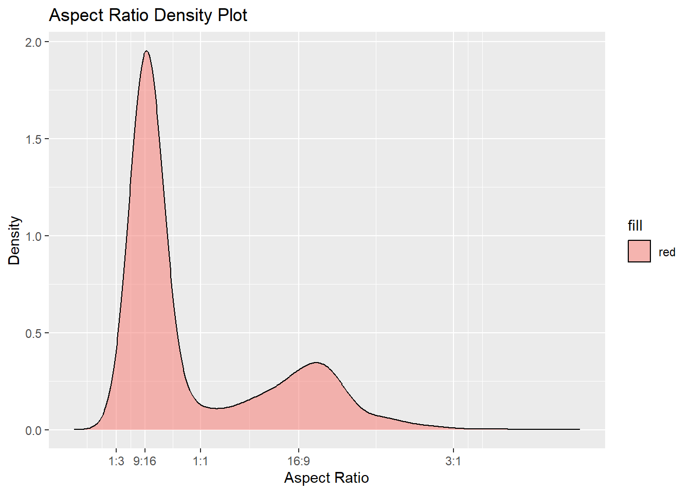

Rows: 2,291
Columns: 3
$ Width <dbl> 390, 393, 375, 390, 393, 414, 375, 428, 375, 375, 430, 412, 390…
$ Height <dbl> 670, 666, 635, 664, 660, 721, 641, 752, 559, 629, 746, 783, 663…
$ Count <dbl> 8691, 4800, 4618, 2503, 2318, 2130, 1890, 1692, 1643, 1393, 123…Q1
Exercise 1
Data from a recent study of viewports can be found in the data set viewports.csv. The purpose of the data collection was to you simply do not know how users are going to visit your website or web app. Instead of making design decisions on strict, limited breakpoints, keep in mind the sheer amount of fragmentation there is in viewports. The data was collected primarily from the USA and Europe, on 122,321 devices. Below is a glimpse of the data. It has three columns defining the width and height of the screen, and count is the number of devices with these dimensions.
- How many variables in this data and what type are they?
There are 3 variables in the ‘viewports’ dataset and all of them are numeric. To be more specific, width and height are continuous variables whilst count is discrete. This is because width and height of the screen are measurements that can take on any real value within a certain range and can have decimal values. Meanwhile, the number of devices with these dimensions (i.e. count) is discrete as it is counted in whole numbers (i.e. number of devices cannot be a fraction or a decimal) and can only take on specific, distinct values.
- Based on the description above, and the variables available in the data, posit two open-ended questions that might be interesting to answer with the data.
Two open-ended questions that would be interesting to answer with the data based on the variables and description above are:
1) What is the distribution of screen widths and heights among the observed devices? This question helps us to better understand the common screen size ranges that users have, which can be useful in making informed web design/development decisions.
2) Is there a correlation/relationship between screen dimensions (i.e. width and height) and the count of devices with these dimensions? This question can help us determine if there are any common screen size patterns/variations among users’ devices. For instance, we would be able to see if certain screen sizes are more prevalent than others and if there’s a relationship between size and usage popularity. This can then provide insights into the optimal breakpoints for designing responsive websites and apps that cater to a wide variety of viewports.
- Create a bubble scatterplot, where size represents the count, with an
x=yguideline underlying the points. Describe what you learn about viewport sizes from this plot.
ggplot(v, aes(x = Width, y = Height, size = Count)) +
geom_point(alpha = 0.5) +
geom_abline(intercept = 0, slope = 1, linetype = "dashed", color = "red") +
scale_size_continuous(name = "Count",
breaks = seq(0, max(v$Count), by = 500),
trans = "log") +
labs(title = "Screen Dimensions (USA- & Europe-based Devices)",
x = "Width",
y = "Height") +
theme_minimal()
Based on the bubble scatterplot above, there’s a significant portion of data points clustered around the ‘x=y’ guideline, indicating that a substantial number of viewports have nearly equal width and height. We can thus infer that there is a tendency for users to access websites/web apps on devices with screens that are of nearly equal width and height (i.e. square or nearly-square dimensions). Most of them also appear to have screen sizes that are of widths and heights <2000 pixels - many users seem to view websites/web apps on smaller-screen devices such as smartphones or small tablets.
However, there are some data points which deviate away from the ‘x=y’ guideline; these represent non-square viewports. Most of them appear to have higher widths (>2000 pixels) but low heights (below 2500 pixels, excluding certain outliers), indicating the prevalence of devices with a landscape orientation. Based on the sizes (counts) of these data points, this suggests that there is also a good number of people browsing on larger-screen devices such as wide-screen monitors and laptops. Web designers should take this into account when optimizing their designs for these larger displays.
It should be noted there are outliers in the dataset as well. Besides a few viewport sizes having large widths and heights, one particular data point has a negative height. This is most likely an error or anomaly in the data, as a negative height for a viewport is not a valid or meaningful measurement.
- Make a transformation of the data to create a new variable,
aspect_ratio, based on Width and Height, that will allow you to explain the sizes in one of the conventional terms eg 16:9. (Note: use width:height definition of aspect ratio.)
gcd <- sapply(1:nrow(v),
function(i) gcd(v$Width[i], v$Height[i]))
v$Width <- v$Width / gcd
v$Height <- v$Height / gcd
v$aspect_ratio <- paste(v$Width, ":", v$Height, sep = "")
glimpse(v)Rows: 2,291
Columns: 4
$ Width <dbl> 39, 131, 75, 195, 131, 414, 375, 107, 375, 375, 215, 412,…
$ Height <dbl> 67, 222, 127, 332, 220, 721, 641, 188, 559, 629, 373, 783…
$ Count <dbl> 8691, 4800, 4618, 2503, 2318, 2130, 1890, 1692, 1643, 139…
$ aspect_ratio <chr> "39:67", "131:222", "75:127", "195:332", "131:220", "414:…- Show the aspect ratio as a density plot, where the x axis labels correspond to particular ratios, “1:3”, “9:16”, “1:1”, “16:9”, “3:1”. (Note: Remember that the data is aggregated already, so that Count needs to the incorporated into computing the density. Setting the axis limits to between 0 and 4 is helpful, too.) Describe the distribution and explain what you learn.
v$aspect_ratio_numeric <- sapply(strsplit(v$aspect_ratio, ":"),
function(x) as.numeric(x[1])/as.numeric(x[2]))
# Create custom labels and breaks for the numeric aspect ratio
custom_labels <- c("1:3", "9:16", "1:1", "16:9", "3:1")
custom_breaks <- c(1/3, 9/16, 1, 16/9, 3)
# Create the density plot using the numeric aspect ratio
ggplot(v, aes(x = aspect_ratio_numeric, weight = Count, fill = 'red')) +
geom_density(alpha = 0.5) +
scale_x_continuous(
breaks = custom_breaks,
labels = custom_labels,
limits = c(0, 4)
) +
labs(
x = "Aspect Ratio",
y = "Density",
title = "Aspect Ratio Density Plot"
)
The density plot shows a right-skewed distribution, meaning that most of the devices have aspect ratios on the lower end while there are relatively fewer devices with higher aspect ratios; the density of devices gradually decreases as we move towards higher aspect ratios. The two distinct peaks also indicate a bimodal distribution. The larger peak centered around ‘9:16’ suggests that a substantial proportion of devices in the dataset have this smaller aspect ratio, whereas the smaller peak situated just after ‘16:9’ indicates another group of devices with a larger aspect ratio (but the number of devices are less prevalent compared to the ‘9:16’ group).
In conclusion, this distribution suggests the existence of two distinct groups of devices/users with different viewport preferences - website or web app designers can thus focus on these insights to optimize their designs and user experiences to better cater to the specific needs and expectations of these two user groups, potentially leading to enhanced user satisfaction and engagement.
- What is the most frequent aspect ratio? What (type of) device does this correspond to? (Note: You’ll need to do some web searching.)
The most frequent aspect ratio is ‘9:16’. A ‘9:16’ aspect ratio is the most common type for vertical videos, and typically corresponds to the vertical screen orientation of a smartphone or mobile device. This aspect ratio is commonly associated with smartphones and mobile devices as it allows for comfortable one-handed use in portrait mode when scrolling through social media feeds, reading, etc. In fact, the ‘9:16’ ratio is especially popular for social media platforms with video story capabilities (e.g. Instagram stories).
Relating back to our previous density plot, we can thus infer that there is a large proportion of users using smartphone devices, where the screen’s aspect ratio is closer to ‘9:16’.